The Titanic dataset from Kaggle (https://www.kaggle.com/datasets/yasserh/titanic-dataset) is a fascinating window into one of history’s most famous maritime disasters. This is a widely used dataset, often for classification problems. It contains detailed information about passengers on the RMS Titanic. The goal of this project is to analyze models with survival status as the target variable. I will apply techniques such as logistic regression and k-nearest neighbors (KNN) while incorporating essential machine learning practices like cross-validation and model evaluation. I will also conduct exploratory data analysis (EDA) to identify trends and patterns within the dataset, to make sure that our models are built on meaningful insights.
Beyond predictive modeling, this project reflects key responsibilities in a professional data science role. The workflow includes collecting, cleaning, and analyzing data, ensuring data accuracy and integrity, and developing visual reports and dashboards to track model performance. The ability to identify trends, anomalies, and key relationships within the data is crucial for making informed decisions. This analysis relies on industry-standard tools in R, using tidyverse for data manipulation and visualization and tidymodels for machine learning workflows. A strong grasp of statistical inference, regression and classification models, preprocessing, feature engineering, and model evaluation is necessary for building interpretable models. By following a structured and methodical approach, this project not only enhances my technical expertise but also reinforces best practices in data science and machine learning.
Dataset Variables
PassengerId: A unique identifier assigned to each passenger. This is a sequential numerical value without predictive significance.
Survived: The target variable we aim to predict. It’s a binary indicator where 0 represents a passenger who perished and 1 represents a survivor.
Pclass: Passenger class, serving as a socio-economic status proxy. It has three possible values:
1 = First class (Upper)
2 = Second class (Middle)
3 = Third class (Lower)
Name: The passenger’s full name, which might contain titles that indicate social status, age, or marital status (e.g., Mr., Mrs., Master, Miss).
Sex: Gender of the passenger, recorded as “male” or “female”.
Age: The passenger’s age in years. This variable contains approximately 177 missing values in our dataset.
SibSp: Number of siblings or spouses aboard the Titanic. This family relation variable counts:
Siblings: brothers, sisters
Spouses: husbands, wives (mistresses and fiancés were not counted)
Parch: Number of parents or chixldren aboard the Titanic. This family relation variable counts:
Parents: mother, father
Children: daughter, son, including stepchildren
Ticket: Ticket number, which might contain alphabetic prefixes or be purely numerical.
Fare: The amount paid for the passenger’s ticket, measured in British pounds. Values range from free passage to over £500.
Cabin: The cabin number where the passenger stayed. This variable has a high proportion of missing values, as cabin information was not recorded for many passengers.
Embarked: Port of embarkation, indicating where the passenger boarded the Titanic:
C = Cherbourg, France
Q = Queenstown, Ireland (now Cobh)
S = Southampton, England
1. Loading Libraries and Data
Code
# Load Required Librarieslibrary(tidyverse)library(tidymodels)library(kknn)library(ggrepel)library(yardstick)library(ggplot2)library(ggthemes)# Set Seed for Reproducibilityset.seed(401) # "The Titanic is associated with the number 401 because that was the yard number #assigned to the ship by its builders, Harland and Wolff". #Just thought this was a fun seed number!# Load Titanic Datasettitanic <-read_csv("titanic.csv")# View First Few Rowsglimpse(titanic)
We’ve loaded essential packages like tidyverse for data manipulation, tidymodels for building predictive workflows, and visualization tools like ggplot2. I’ve set our random seed to 401 which was the actual yard number assigned to the Titanic by its builders, adding just a touch of historical significance while ensuring reproducible results.
Our initial glimpse at the dataset reveals 891 passenger records with various features. The target variable “Survived” (0 = perished, 1 = survived) will be what we’re trying to predict. We have both numerical variables like Age (ranging from 0.42 to 80 years) and Fare (from free passage to a whopping 512.33), as well as categorical variables like passenger class and embarkation point. There are some missing values, particularly in Age (177 missing entries), which we’ll need to address during preprocessing.
The next step is to clean the data and continue using that data for the rest of the project.
In this step, I’ve converted categorical variables (Survived, Pclass, Sex, Embarked) into factors, making them suitable for our classification models. I’ve also removed less useful columns like PassengerId, Name, Ticket, and Cabin to focus on predictive features.
I’ve left missing values intact at this stage rather than imputing them immediately. This is to prevent data leakage. We will handle missing values within our modeling workflow using various imputation strategies to see which performs best.
3. Exploratory Data Analysis (EDA)
Code
# Define colors for consistencynumerical_color <-"#00876c"# Greenish-bluecategorical_color <-"#e63946"# Redsurvival_colors <-c("#1f78b4", "#33a02c") # Blue for non-survivors, Green for survivors# Plot Distribution of Numerical Featuresnumerical_features <-c("Age", "SibSp", "Parch", "Fare")for (feature in numerical_features) {print(ggplot(titanic, aes(x = .data[[feature]])) +geom_histogram(binwidth =10, fill = numerical_color, color ="white", alpha =0.85) +ggtitle(paste("Distribution of", feature)) +theme_economist() +theme(plot.title =element_text(hjust =0.5, face ="bold")) +labs(x = feature, y ="Count") )}
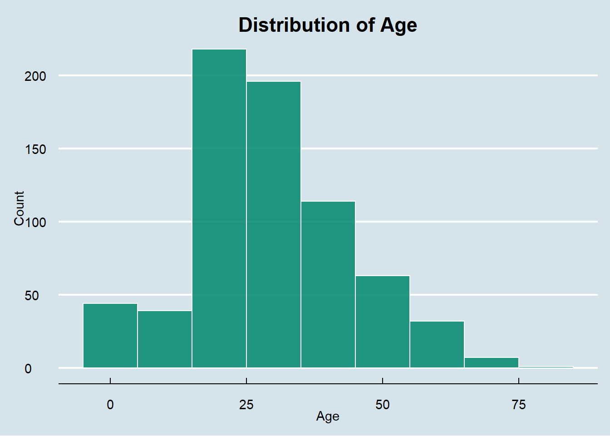
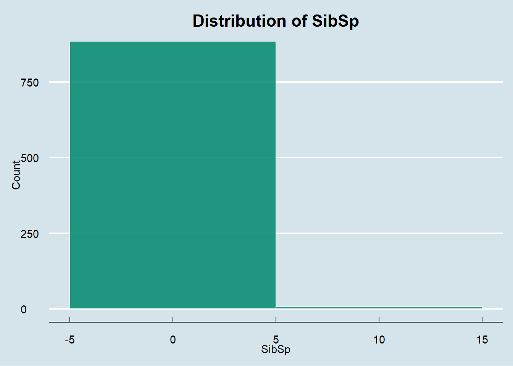
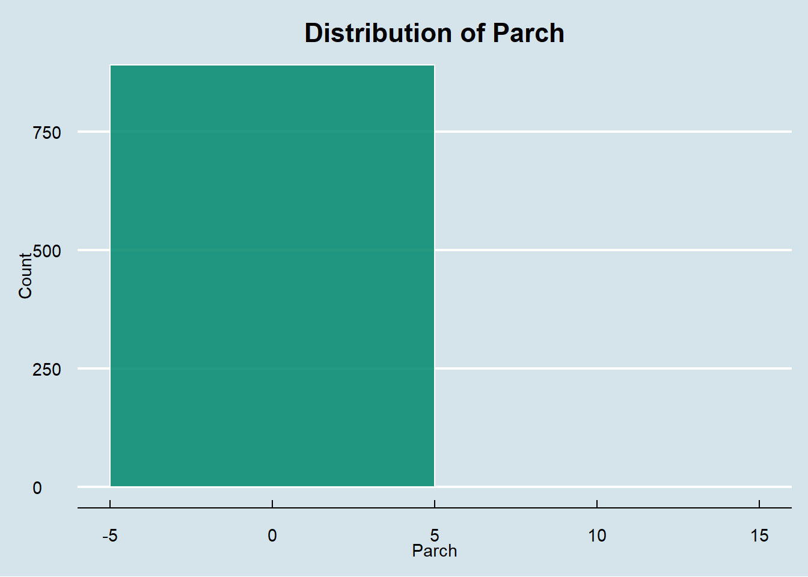
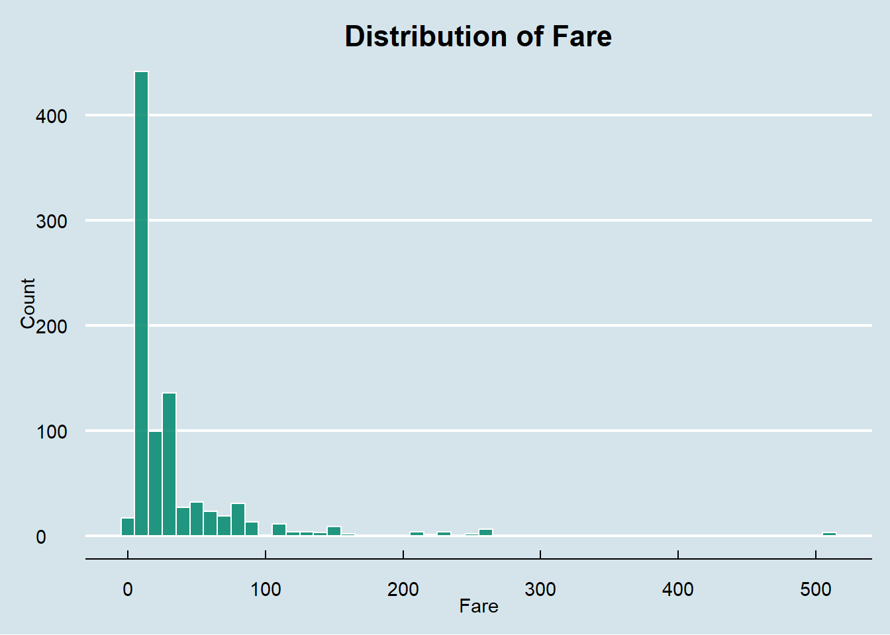
Code
# Plot Distribution of Categorical Featurescategorical_features <-c("Survived", "Pclass", "Sex", "Embarked")for (feature in categorical_features) {print(ggplot(titanic, aes(x = .data[[feature]])) +geom_bar(fill = categorical_color, color ="black", alpha =0.85) +ggtitle(paste("Distribution of", feature)) +theme_economist() +theme(plot.title =element_text(hjust =0.5, face ="bold")) +labs(x = feature, y ="Count") )}
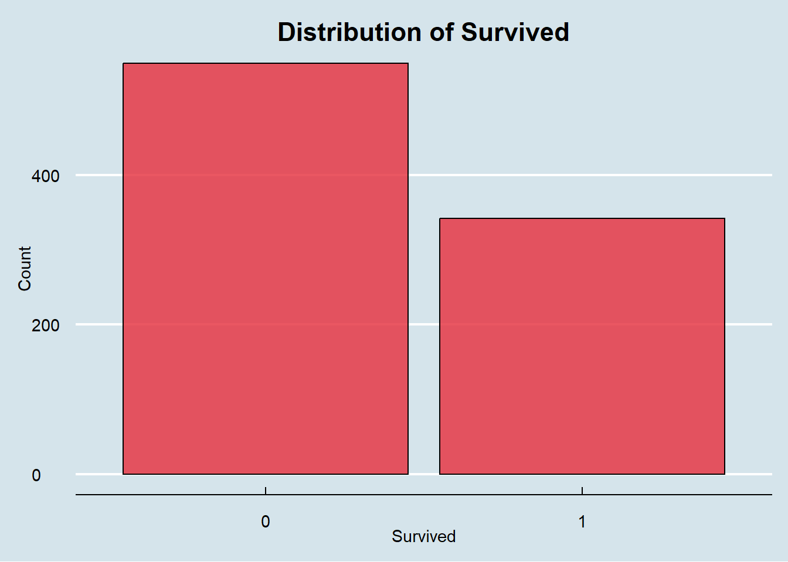
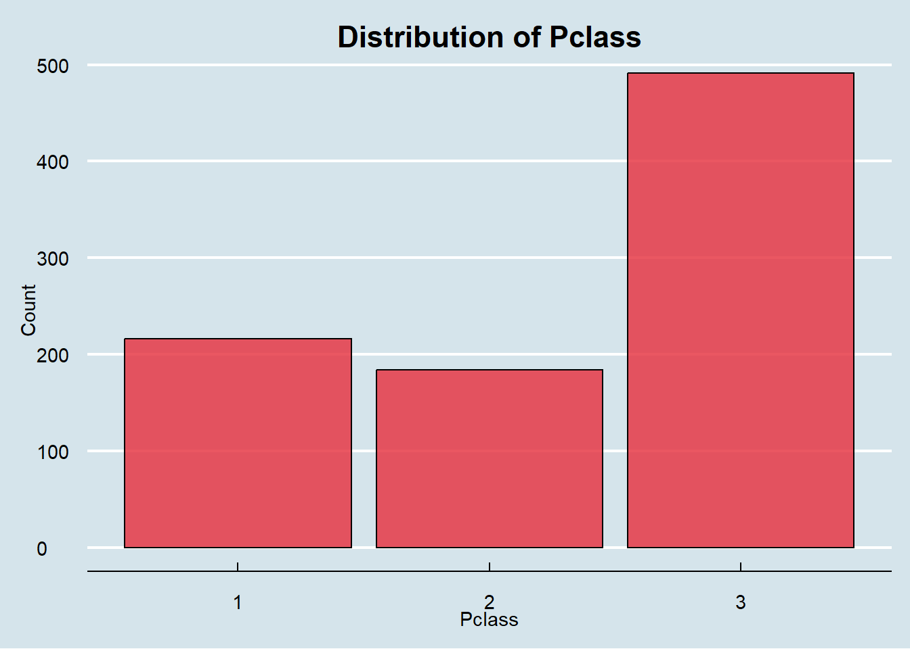
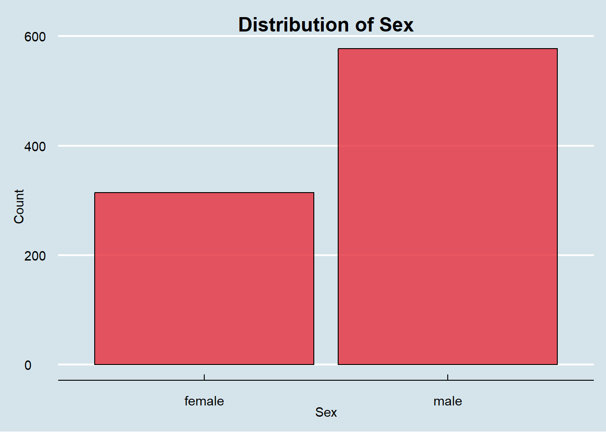
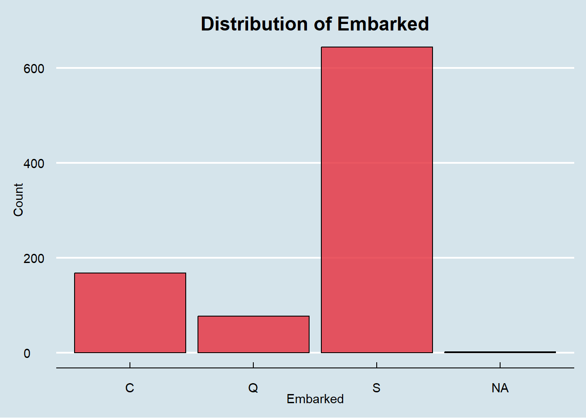
Code
# Plot Survival Rate by Different Featuresfeatures_to_plot <-c("Pclass", "Sex", "Embarked")for (feature in features_to_plot) {print(ggplot(titanic, aes(x = .data[[feature]], fill =as.factor(Survived))) +geom_bar(position ="fill", alpha =0.85) +scale_fill_manual(values = survival_colors) +ggtitle(paste("Survival Rate by", feature)) +theme_economist() +theme(plot.title =element_text(hjust =0.5, face ="bold")) +labs(x = feature, y ="Proportion", fill ="Survived") )}
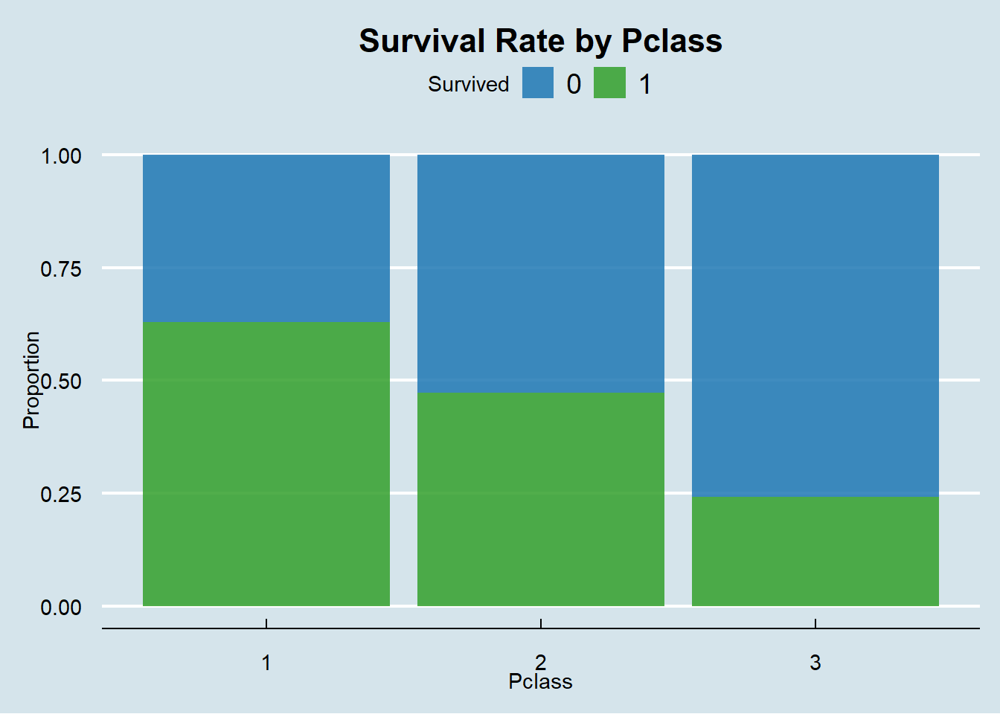
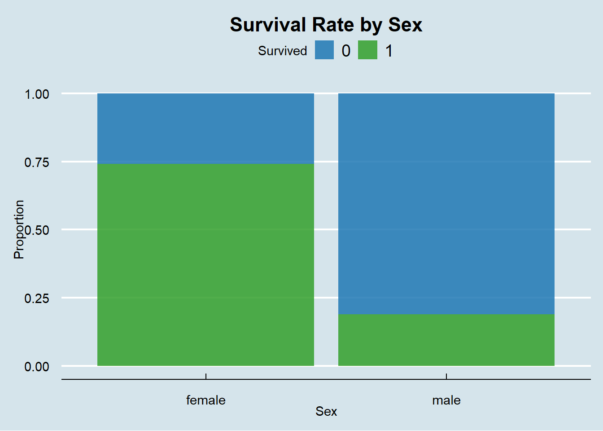
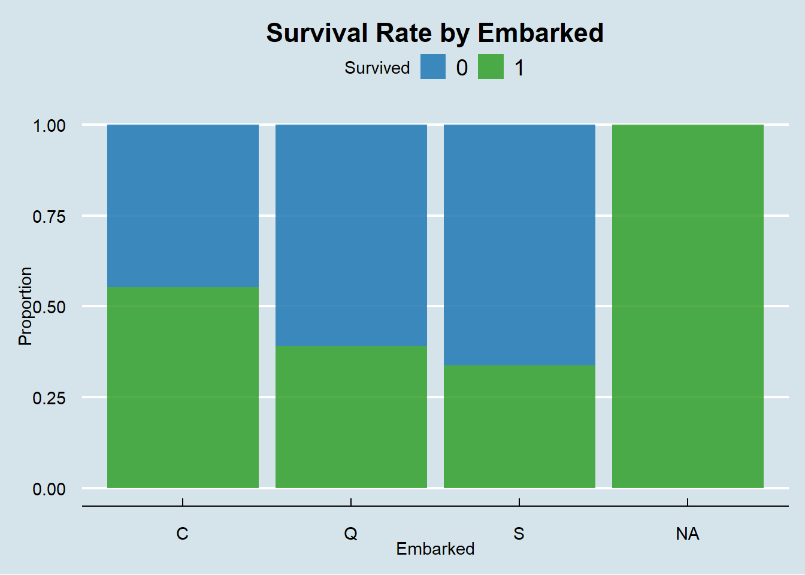
Our EDA reveals some interesting but unsurprising realities about the Titanic disaster. The survival rate shows that significantly more passengers perished than survived.
Diving deeper (no pun intended) into demographics, we observe that passengers between 20-40 years had the highest survival rates relative to other age groups. The most striking pattern emerges when examining passenger class: third-class passengers had dramatically lower survival rates compared to first-class passengers, highlighting the socioeconomic difference which eventually influenced survival outcomes.
These visualizations provide crucial insights into potential feature importance for our predictive models and highlight data anomalies we’ll need to address during preprocessing.
Here, we’ve partitioned our data into training (80%) and testing (20%) sets. I’ve used stratification to maintain the same proportion of survivors in both sets, preventing any artificial bias in our evaluation.
I’ve also implemented 10-fold cross-validation with 10 repeats. This rigorous approach means each model will be tested across 100 different training/validation combinations, giving us extremely reliable performance estimates and reducing the variance in our assessments.
5. Defining our models
Code
# Logistic Regressionlog_reg_model <-logistic_reg() |>set_engine("glm") |>set_mode("classification")# KNN Models with Different k Valuesknn5_model <-nearest_neighbor(neighbors =5) |>set_engine("kknn") |>set_mode("classification")knn10_model <-nearest_neighbor(neighbors =10) |>set_engine("kknn") |>set_mode("classification")
For our prediction, I’ve selected two different types of models. First is logistic regression, which is reliable, interpretable, and effective for understanding feature importance. Then we have k-nearest neighbors (KNN) with two different configurations (k=5 and k=10), which is a more flexible approach and adapts to local patterns in the data.
Since we’re predicting a binary outcome (survived or didn’t survive), all models are set to “classification” mode rather than “regression.” Each model has its strengths: logistic regression excels at providing interpretable odds ratios, while KNN can capture more complex, non-linear relationships in the data.
6. Preprocessing Data with Recipes
Code
# For Logistic Regression recipeslogreg_meanimpute <-recipe(Survived ~ ., data = train_data) %>%step_nzv(all_predictors()) %>%step_zv(all_predictors()) %>%step_impute_mean(all_numeric_predictors()) %>%step_unknown(Embarked) %>%# Handle missing values in Embarkedstep_dummy(all_nominal_predictors(), one_hot =FALSE) %>%step_lincomb(all_numeric_predictors()) logreg_medianimpute <-recipe(Survived ~ ., data = train_data) %>%step_nzv(all_predictors()) %>%step_zv(all_predictors()) %>%step_impute_median(all_numeric_predictors()) %>%step_unknown(Embarked) %>%# Handle missing values in Embarkedstep_dummy(all_nominal_predictors(), one_hot =FALSE) %>%step_lincomb(all_numeric_predictors()) logreg_knnimpute <-recipe(Survived ~ ., data = train_data) %>%step_nzv(all_predictors()) %>%step_zv(all_predictors()) %>%step_impute_knn(all_numeric_predictors()) %>%step_unknown(Embarked) %>%# Handle missing values in Embarkedstep_dummy(all_nominal_predictors(), one_hot =FALSE) %>%step_lincomb(all_numeric_predictors()) # For KNN recipesknn_meanimpute <-recipe(Survived ~ ., data = train_data) %>%step_nzv(all_predictors()) %>%step_zv(all_predictors()) %>%step_impute_mean(all_numeric_predictors()) %>%step_unknown(Embarked) %>%# Handle missing values in Embarkedstep_dummy(all_nominal_predictors(), one_hot =TRUE) %>%step_lincomb(all_numeric_predictors()) knn_medianimpute <-recipe(Survived ~ ., data = train_data) %>%step_nzv(all_predictors()) %>%step_zv(all_predictors()) %>%step_impute_median(all_numeric_predictors()) %>%step_unknown(Embarked) %>%# Handle missing values in Embarkedstep_dummy(all_nominal_predictors(), one_hot =TRUE) %>%step_lincomb(all_numeric_predictors()) knn_knnimpute <-recipe(Survived ~ ., data = train_data) %>%step_nzv(all_predictors()) %>%step_zv(all_predictors()) %>%step_impute_knn(all_numeric_predictors()) %>%step_unknown(Embarked) %>%# Handle missing values in Embarkedstep_dummy(all_nominal_predictors(), one_hot =TRUE) %>%step_lincomb(all_numeric_predictors())
Here, I’ve created six different preprocessing recipes to transform our raw data into model-ready format. Each recipe follows a similar pattern but with key differences in how missing values are handled:
First, we remove near-zero and zero-variance predictors that don’t contribute meaningful information
Then we impute missing values using one of three strategies:
- Mean imputation (replacing missing values with the average)
- Median imputation (using the middle value, more robust to outliers)
- KNN imputation (using similar instances to estimate missing values)
Next, we convert categorical variables to dummy variables
Finally, we remove linearly dependent variables to avoid multicollinearity
The distinction between logistic regression and KNN recipes lies in the one-hot encoding: logistic regression uses regular dummy variables, while KNN benefits from one-hot encoding (setting one_hot = TRUE) due to its distance-based nature.
This comprehensive approach lets us compare different imputation strategies and determine which works best for our Titanic data.
7. Creating Model Lists and Workflow Sets
Code
# Logistic Regression Preprocessorslogreg_preprocessors <-list(logreg_knn_impute = logreg_knnimpute,logreg_mean_impute = logreg_meanimpute,logreg_median_impute = logreg_medianimpute)# KNN Classification Preprocessorsknn_preprocessors <-list(knn_knn_impute = knn_knnimpute,knn_mean_impute = knn_meanimpute,knn_median_impute = knn_medianimpute)# Logistic Regression Modellogreg_models <-list(logreg_model =logistic_reg() |>set_engine("glm") |>set_mode("classification"))# KNN Models with different k valuesknn_models <-list(knn5 =nearest_neighbor(neighbors =5) |>set_engine("kknn") |>set_mode("classification"),knn10 =nearest_neighbor(neighbors =10) |>set_engine("kknn") |>set_mode("classification"))# Create workflow sets for each model typelogreg_workflows <-workflow_set(logreg_preprocessors, logreg_models, cross =TRUE)knn_workflows <-workflow_set(knn_preprocessors, knn_models, cross =TRUE)# Combine all workflow setsall_models <-bind_rows(logreg_workflows, knn_workflows)# Print workflow setall_models
With our preprocessing recipes and models defined, it’s time to organize everything into a systematic framework, like the Titanic in its early hours. I’ve structured our approach using workflow sets which is a powerful tidymodels feature that helps manage complex modeling processes.
I’ve grouped our preprocessing recipes by model type and created lists of our models with different configurations. Then, using workflow_set(), I’ve created all possible combinations of preprocessors and models. This gives us 9 different workflows:
3 logistic regression workflows (one for each imputation strategy)
6 KNN workflows (two different k values, each with three imputation strategies)
This approach keeps everything organized while automating the process of trying multiple model configurations. Rather than writing repetitive code for each combination, we now have a clean, methodical way to evaluate all our options.
8. Model Training and Evaluation
Code
# Define classification metricstitanic_class_metrics <-metric_set(accuracy, roc_auc)# Fit all models using cross-validationall_fits <- all_models |>workflow_map("fit_resamples",resamples = titanic_folds,metrics = titanic_class_metrics)# Collect metricscollect_metrics(all_fits)
(If you’re rendering this yourself, please be patient for this step, the Titanic wasn’t built in a day.)
Now comes the exciting part - training and evaluating our models across multiple configurations. Using workflow_map(), I’ve fit all 9 model configurations across our 10-fold cross-validation with 10 repeats, effectively evaluating each model 100 times. This comprehensive approach provides extremely reliable performance estimates.
Looking at the accuracy plot, we can see clear performance differences. The KNN models with k=10 using mean and median imputation (specifically knn_mean_impute_knn10 and knn_median_impute_knn10) achieve the highest accuracy scores around 80-81%. This suggests these configurations are classifying passengers with the greatest overall correctness.
The ROC AUC visualization tells a more different story. Our logistic regression models (particularly logreg_knn_impute_logreg_model) reach AUC scores approaching 0.85-0.86, outperforming the KNN models in this metric. This indicates that while KNN models might have slightly better raw accuracy, the logistic regression models excel at ranking predictions by probability which is a crucial capability when we need to understand confidence levels in survival predictions.
From the metric table, we can see that the best logistic regression model achieves an accuracy of approximately 79.6% with an AUC of 0.85, while the best KNN model reaches about 80.4% accuracy but with a slightly lower AUC of 0.83. This trade-off between metrics highlights an important consideration in model selection, whether we prioritize overall correctness (accuracy) or probabilistic ranking ability (AUC).
9. Selecting the Best Model and Making Predictions
Code
# Select the best modelbest_model <- all_fits |>rank_results(rank_metric ="roc_auc") |>filter(.metric =="roc_auc") |>slice(1) |>pull(wflow_id)# Fit the best model on the full training datafinal_fit <- all_models |>extract_workflow(best_model) |>fit(data = train_data)# Make predictions on test datatest_results <- test_data |>mutate(pred_class =predict(final_fit, new_data = test_data)$.pred_class,pred_prob =predict(final_fit, new_data = test_data, type ="prob")$.pred_1 )# Create confusion matrixconf_mat <- test_results |>conf_mat(truth = Survived, estimate = pred_class)# Plot confusion matrixconf_mat |>autoplot("heatmap") +scale_fill_gradient(low ="white", high ="#003f5c") +theme_minimal() +labs(title ="Confusion Matrix Heatmap",fill ="Count")
After thorough evaluation, I’ve selected the best-performing model based on ROC AUC, which is logreg_knn_impute_logreg_model. This logistic regression model with KNN imputation balances multiple performance aspects rather than optimizing for a single metric like accuracy, which can be misleading with the imbalanced classes in the Titanic dataset.
The confusion matrix heatmap reveals the model’s prediction patterns in more detail. The darker squares along the diagonal (true negatives in the top-left and true positives in the bottom-right) show where our model correctly identified both non-survivors and survivors. From the intensity of these squares, we can see the model is particularly strong at identifying non-survivors (darker top-left square).
Our comprehensive metrics on the test data reveal:
Accuracy: 81.0% – the model correctly classifies about 4 out of 5 passengers overall
Recall: 69.6% – among actual survivors, the model identifies roughly 7 out of 10
Precision: 78.7% – when predicting someone survived, the model is right almost 80% of the time
Specificity: 88.2% – the model excels at identifying non-survivors, correctly classifying nearly 9 out of 10
NPV: 82.2% – when predicting someone didn’t survive, the model is correct about 82% of the time
These numbers tell us that our model is particularly good at identifying who didn’t survive (high specificity) but slightly less adept at catching all survivors (lower recall). This asymmetry is like the historical reality of the Titanic disaster, where the majority did not survive.
Another crucial aspect of binary classification models is understanding the tradeoff between sensitivity (catching true survivors) and specificity (correctly identifying non-survivors). The ROC curve visualizes this tradeoff across different probability thresholds.
Our ROC curve shows a pronounced bow toward the upper-left corner of the plot, with the line rising steeply at first before gradually flattening. This shape indicates that our model achieves a good balance between true positive rate and false positive rate across various classification thresholds.
The calculated AUC value of 0.865 quantifies this performance. Interpretively, this means our model has an 86.5% chance of ranking a randomly chosen survivor higher than a randomly chosen non-survivor – significantly better than the 50% we would expect from random guessing. In practical terms, if we had to decide who to allocate limited lifeboat space to based on survival probability, our model would make the right call about 87% of the time.
This strong AUC score validates our model selection approach and suggests that logistic regression with KNN imputation effectively captures the complex patterns within the Titanic dataset. The curve’s shape also offers insights into potential threshold adjustments we could make to favor either sensitivity or specificity depending on the specific analytical goals.
Conclusion
This analysis of the Titanic dataset demonstrates a complete data science workflow from preprocessing through model evaluation. Through careful data preprocessing with multiple imputation strategies and appropriate handling of categorical variables, I established a solid foundation for understanding the factors that influenced passenger survival. The systematic approach to model evaluation, comparing logistic regression and KNN models across different configurations using tidymodels, revealed that while KNN models achieved slightly higher accuracy, logistic regression offered better probabilistic ranking capabilities.
The final model achieved 81% accuracy and an AUC of 0.865 on unseen test data. The model’s higher specificity (88.2%) compared to recall (69.6%) reflects the historical reality that the majority of passengers did not survive, with clear patterns emerging around passenger class, gender, and age. These insights not only have statistical significance but also provide a numerical perspective on the historic tragedy.
Throughout this project, I’ve applied a methodical, rigorous approach to data science using industry-standard tools and techniques. From exploratory data analysis that uncovered meaningful patterns to the implementation of cross-validation techniques ensuring reliable model evaluation, each step followed best practices in statistical modeling. This systematic workflow demonstrates how modern machine learning techniques can extract valuable insights even from historical datasets, bringing statistical clarity to complex human events while maintaining technical rigor and analytical integrity.
Note
Some visual elements of this report and some debugging were done with the help of AI. Everything that was done using AI was fully understood and comprehended.
Source Code
---title: "Titanic Data Analysis"subtitle: "Statistical Machine Learning: Data Analysis"author: "Aayush Shrestha"date: todayeditor: visualformat: html: theme: darkly highlight-style: atom-one-dark smooth-scroll: true scroll-progress: true code-fold: show code-tools: true execute: error: false warning: false---# **Introduction**The Titanic dataset from Kaggle (<https://www.kaggle.com/datasets/yasserh/titanic-dataset>) is a fascinating window into one of history's most famous maritime disasters. This is a widely used dataset, often for classification problems. It contains detailed information about passengers on the RMS Titanic. The goal of this project is to analyze models with survival status as the target variable. I will apply techniques such as logistic regression and k-nearest neighbors (KNN) while incorporating essential machine learning practices like cross-validation and model evaluation. I will also conduct exploratory data analysis (EDA) to identify trends and patterns within the dataset, to make sure that our models are built on meaningful insights.Beyond predictive modeling, this project reflects key responsibilities in a professional data science role. The workflow includes collecting, cleaning, and analyzing data, ensuring data accuracy and integrity, and developing visual reports and dashboards to track model performance. The ability to identify trends, anomalies, and key relationships within the data is crucial for making informed decisions. This analysis relies on industry-standard tools in R, using tidyverse for data manipulation and visualization and tidymodels for machine learning workflows. A strong grasp of statistical inference, regression and classification models, preprocessing, feature engineering, and model evaluation is necessary for building interpretable models. By following a structured and methodical approach, this project not only enhances my technical expertise but also reinforces best practices in data science and machine learning.# **Dataset Variables**- **PassengerId**: A unique identifier assigned to each passenger. This is a sequential numerical value without predictive significance.<!-- -->- **Survived**: The target variable we aim to predict. It's a binary indicator where 0 represents a passenger who perished and 1 represents a survivor.<!-- -->- **Pclass**: Passenger class, serving as a socio-economic status proxy. It has three possible values: - 1 = First class (Upper) - 2 = Second class (Middle) - 3 = Third class (Lower)<!-- -->- **Name**: The passenger's full name, which might contain titles that indicate social status, age, or marital status (e.g., Mr., Mrs., Master, Miss).<!-- -->- **Sex**: Gender of the passenger, recorded as "male" or "female".<!-- -->- **Age**: The passenger's age in years. This variable contains approximately 177 missing values in our dataset.<!-- -->- **SibSp**: Number of siblings or spouses aboard the Titanic. This family relation variable counts: - Siblings: brothers, sisters - Spouses: husbands, wives (mistresses and fiancés were not counted)<!-- -->- **Parch**: Number of parents or chixldren aboard the Titanic. This family relation variable counts: - Parents: mother, father - Children: daughter, son, including stepchildren<!-- -->- **Ticket**: Ticket number, which might contain alphabetic prefixes or be purely numerical.<!-- -->- **Fare**: The amount paid for the passenger's ticket, measured in British pounds. Values range from free passage to over £500.<!-- -->- **Cabin**: The cabin number where the passenger stayed. This variable has a high proportion of missing values, as cabin information was not recorded for many passengers.<!-- -->- **Embarked**: Port of embarkation, indicating where the passenger boarded the Titanic: - C = Cherbourg, France - Q = Queenstown, Ireland (now Cobh) - S = Southampton, England# **1. Loading Libraries and Data**```{r}# Load Required Librarieslibrary(tidyverse)library(tidymodels)library(kknn)library(ggrepel)library(yardstick)library(ggplot2)library(ggthemes)# Set Seed for Reproducibilityset.seed(401) # "The Titanic is associated with the number 401 because that was the yard number #assigned to the ship by its builders, Harland and Wolff". #Just thought this was a fun seed number!# Load Titanic Datasettitanic <-read_csv("titanic.csv")# View First Few Rowsglimpse(titanic)```We've loaded essential packages like tidyverse for data manipulation, tidymodels for building predictive workflows, and visualization tools like ggplot2. I've set our random seed to 401 which was the actual yard number assigned to the Titanic by its builders, adding just a touch of historical significance while ensuring reproducible results.Our initial glimpse at the dataset reveals 891 passenger records with various features. The target variable "Survived" (0 = perished, 1 = survived) will be what we're trying to predict. We have both numerical variables like Age (ranging from 0.42 to 80 years) and Fare (from free passage to a whopping 512.33), as well as categorical variables like passenger class and embarkation point. There are some missing values, particularly in Age (177 missing entries), which we'll need to address during preprocessing.The next step is to clean the data and continue using that data for the rest of the project.# **2. Cleaning Data**```{r}titanic <- titanic |>mutate(Survived =factor(Survived),Pclass =factor(Pclass),Sex =factor(Sex),Embarked =factor(Embarked) ) |>select(-PassengerId, -Name, -Ticket, -Cabin) # Drop unnecessary columns```In this step, I've converted categorical variables (Survived, Pclass, Sex, Embarked) into factors, making them suitable for our classification models. I've also removed less useful columns like PassengerId, Name, Ticket, and Cabin to focus on predictive features.I've left missing values intact at this stage rather than imputing them immediately. This is to prevent data leakage. We will handle missing values within our modeling workflow using various imputation strategies to see which performs best.# **3. Exploratory Data Analysis (EDA)**```{r}# Define colors for consistencynumerical_color <-"#00876c"# Greenish-bluecategorical_color <-"#e63946"# Redsurvival_colors <-c("#1f78b4", "#33a02c") # Blue for non-survivors, Green for survivors# Plot Distribution of Numerical Featuresnumerical_features <-c("Age", "SibSp", "Parch", "Fare")for (feature in numerical_features) {print(ggplot(titanic, aes(x = .data[[feature]])) +geom_histogram(binwidth =10, fill = numerical_color, color ="white", alpha =0.85) +ggtitle(paste("Distribution of", feature)) +theme_economist() +theme(plot.title =element_text(hjust =0.5, face ="bold")) +labs(x = feature, y ="Count") )}# Plot Distribution of Categorical Featurescategorical_features <-c("Survived", "Pclass", "Sex", "Embarked")for (feature in categorical_features) {print(ggplot(titanic, aes(x = .data[[feature]])) +geom_bar(fill = categorical_color, color ="black", alpha =0.85) +ggtitle(paste("Distribution of", feature)) +theme_economist() +theme(plot.title =element_text(hjust =0.5, face ="bold")) +labs(x = feature, y ="Count") )}# Plot Survival Rate by Different Featuresfeatures_to_plot <-c("Pclass", "Sex", "Embarked")for (feature in features_to_plot) {print(ggplot(titanic, aes(x = .data[[feature]], fill =as.factor(Survived))) +geom_bar(position ="fill", alpha =0.85) +scale_fill_manual(values = survival_colors) +ggtitle(paste("Survival Rate by", feature)) +theme_economist() +theme(plot.title =element_text(hjust =0.5, face ="bold")) +labs(x = feature, y ="Proportion", fill ="Survived") )}```Our EDA reveals some interesting but unsurprising realities about the Titanic disaster. The survival rate shows that significantly more passengers perished than survived.Diving deeper (no pun intended) into demographics, we observe that passengers between 20-40 years had the highest survival rates relative to other age groups. The most striking pattern emerges when examining passenger class: third-class passengers had dramatically lower survival rates compared to first-class passengers, highlighting the socioeconomic difference which eventually influenced survival outcomes.These visualizations provide crucial insights into potential feature importance for our predictive models and highlight data anomalies we'll need to address during preprocessing.# **4. Train-Test Split & Cross-Validation**```{r}titanic_split <-initial_split(titanic, prop =0.8, strata = Survived)train_data <-training(titanic_split)test_data <-testing(titanic_split)# 10-Fold Cross-Validation with 10 repeatstitanic_folds <-vfold_cv(train_data, v =10, strata = Survived, repeats =10)```Here, we've partitioned our data into training (80%) and testing (20%) sets. I've used stratification to maintain the same proportion of survivors in both sets, preventing any artificial bias in our evaluation.I've also implemented 10-fold cross-validation with 10 repeats. This rigorous approach means each model will be tested across 100 different training/validation combinations, giving us extremely reliable performance estimates and reducing the variance in our assessments.# **5. Defining our models**```{r}# Logistic Regressionlog_reg_model <-logistic_reg() |>set_engine("glm") |>set_mode("classification")# KNN Models with Different k Valuesknn5_model <-nearest_neighbor(neighbors =5) |>set_engine("kknn") |>set_mode("classification")knn10_model <-nearest_neighbor(neighbors =10) |>set_engine("kknn") |>set_mode("classification")```For our prediction, I've selected two different types of models. First is logistic regression, which is reliable, interpretable, and effective for understanding feature importance. Then we have k-nearest neighbors (KNN) with two different configurations (k=5 and k=10), which is a more flexible approach and adapts to local patterns in the data.Since we're predicting a binary outcome (survived or didn't survive), all models are set to "classification" mode rather than "regression." Each model has its strengths: logistic regression excels at providing interpretable odds ratios, while KNN can capture more complex, non-linear relationships in the data.# **6. Preprocessing Data with Recipes**```{r}# For Logistic Regression recipeslogreg_meanimpute <-recipe(Survived ~ ., data = train_data) %>%step_nzv(all_predictors()) %>%step_zv(all_predictors()) %>%step_impute_mean(all_numeric_predictors()) %>%step_unknown(Embarked) %>%# Handle missing values in Embarkedstep_dummy(all_nominal_predictors(), one_hot =FALSE) %>%step_lincomb(all_numeric_predictors()) logreg_medianimpute <-recipe(Survived ~ ., data = train_data) %>%step_nzv(all_predictors()) %>%step_zv(all_predictors()) %>%step_impute_median(all_numeric_predictors()) %>%step_unknown(Embarked) %>%# Handle missing values in Embarkedstep_dummy(all_nominal_predictors(), one_hot =FALSE) %>%step_lincomb(all_numeric_predictors()) logreg_knnimpute <-recipe(Survived ~ ., data = train_data) %>%step_nzv(all_predictors()) %>%step_zv(all_predictors()) %>%step_impute_knn(all_numeric_predictors()) %>%step_unknown(Embarked) %>%# Handle missing values in Embarkedstep_dummy(all_nominal_predictors(), one_hot =FALSE) %>%step_lincomb(all_numeric_predictors()) # For KNN recipesknn_meanimpute <-recipe(Survived ~ ., data = train_data) %>%step_nzv(all_predictors()) %>%step_zv(all_predictors()) %>%step_impute_mean(all_numeric_predictors()) %>%step_unknown(Embarked) %>%# Handle missing values in Embarkedstep_dummy(all_nominal_predictors(), one_hot =TRUE) %>%step_lincomb(all_numeric_predictors()) knn_medianimpute <-recipe(Survived ~ ., data = train_data) %>%step_nzv(all_predictors()) %>%step_zv(all_predictors()) %>%step_impute_median(all_numeric_predictors()) %>%step_unknown(Embarked) %>%# Handle missing values in Embarkedstep_dummy(all_nominal_predictors(), one_hot =TRUE) %>%step_lincomb(all_numeric_predictors()) knn_knnimpute <-recipe(Survived ~ ., data = train_data) %>%step_nzv(all_predictors()) %>%step_zv(all_predictors()) %>%step_impute_knn(all_numeric_predictors()) %>%step_unknown(Embarked) %>%# Handle missing values in Embarkedstep_dummy(all_nominal_predictors(), one_hot =TRUE) %>%step_lincomb(all_numeric_predictors())```Here, I've created six different preprocessing recipes to transform our raw data into model-ready format. Each recipe follows a similar pattern but with key differences in how missing values are handled:1. First, we remove near-zero and zero-variance predictors that don't contribute meaningful information2. Then we impute missing values using one of three strategies:``` - Mean imputation (replacing missing values with the average)- Median imputation (using the middle value, more robust to outliers)- KNN imputation (using similar instances to estimate missing values)```3. Next, we convert categorical variables to dummy variables4. Finally, we remove linearly dependent variables to avoid multicollinearityThe distinction between logistic regression and KNN recipes lies in the one-hot encoding: logistic regression uses regular dummy variables, while KNN benefits from one-hot encoding (setting `one_hot = TRUE`) due to its distance-based nature.This comprehensive approach lets us compare different imputation strategies and determine which works best for our Titanic data.# **7. Creating Model Lists and Workflow Sets**```{r}# Logistic Regression Preprocessorslogreg_preprocessors <-list(logreg_knn_impute = logreg_knnimpute,logreg_mean_impute = logreg_meanimpute,logreg_median_impute = logreg_medianimpute)# KNN Classification Preprocessorsknn_preprocessors <-list(knn_knn_impute = knn_knnimpute,knn_mean_impute = knn_meanimpute,knn_median_impute = knn_medianimpute)# Logistic Regression Modellogreg_models <-list(logreg_model =logistic_reg() |>set_engine("glm") |>set_mode("classification"))# KNN Models with different k valuesknn_models <-list(knn5 =nearest_neighbor(neighbors =5) |>set_engine("kknn") |>set_mode("classification"),knn10 =nearest_neighbor(neighbors =10) |>set_engine("kknn") |>set_mode("classification"))# Create workflow sets for each model typelogreg_workflows <-workflow_set(logreg_preprocessors, logreg_models, cross =TRUE)knn_workflows <-workflow_set(knn_preprocessors, knn_models, cross =TRUE)# Combine all workflow setsall_models <-bind_rows(logreg_workflows, knn_workflows)# Print workflow setall_models```With our preprocessing recipes and models defined, it's time to organize everything into a systematic framework, like the Titanic in its early hours. I've structured our approach using workflow sets which is a powerful tidymodels feature that helps manage complex modeling processes.I've grouped our preprocessing recipes by model type and created lists of our models with different configurations. Then, using `workflow_set()`, I've created all possible combinations of preprocessors and models. This gives us 9 different workflows:- 3 logistic regression workflows (one for each imputation strategy)- 6 KNN workflows (two different k values, each with three imputation strategies)This approach keeps everything organized while automating the process of trying multiple model configurations. Rather than writing repetitive code for each combination, we now have a clean, methodical way to evaluate all our options.# **8. Model Training and Evaluation**```{r}# Define classification metricstitanic_class_metrics <-metric_set(accuracy, roc_auc)# Fit all models using cross-validationall_fits <- all_models |>workflow_map("fit_resamples",resamples = titanic_folds,metrics = titanic_class_metrics)# Collect metricscollect_metrics(all_fits)``````{r}# Plot Accuracy for Classification Modelsautoplot(all_fits, metric ="accuracy") +geom_label_repel(aes(label = wflow_id), size =3, label.size =0.15, alpha =0.7, max.overlaps =10, force =5, nudge_x =0.2, nudge_y =0.005, seed =42) +theme_bw(base_size =14) +theme(legend.position ="none") +labs(title ="Accuracy of Classification Models",x ="Workflow Rank",y ="Accuracy")# Plot AUC for Classification Modelsautoplot(all_fits, metric ="roc_auc") +geom_label_repel(aes(label = wflow_id), size =3, label.size =0.15, alpha =0.7, max.overlaps =10, force =5, nudge_x =0.2, nudge_y =0.005, seed =42) +theme_bw(base_size =14) +theme(legend.position ="none") +labs(title ="AUC-ROC of Classification Models",x ="Workflow Rank",y ="AUC-ROC")```(If you're rendering this yourself, please be patient for this step, the Titanic wasn't built in a day.)Now comes the exciting part - training and evaluating our models across multiple configurations. Using `workflow_map()`, I've fit all 9 model configurations across our 10-fold cross-validation with 10 repeats, effectively evaluating each model 100 times. This comprehensive approach provides extremely reliable performance estimates.Looking at the accuracy plot, we can see clear performance differences. The KNN models with k=10 using mean and median imputation (specifically `knn_mean_impute_knn10` and `knn_median_impute_knn10`) achieve the highest accuracy scores around 80-81%. This suggests these configurations are classifying passengers with the greatest overall correctness.The ROC AUC visualization tells a more different story. Our logistic regression models (particularly `logreg_knn_impute_logreg_model`) reach AUC scores approaching 0.85-0.86, outperforming the KNN models in this metric. This indicates that while KNN models might have slightly better raw accuracy, the logistic regression models excel at ranking predictions by probability which is a crucial capability when we need to understand confidence levels in survival predictions.From the metric table, we can see that the best logistic regression model achieves an accuracy of approximately 79.6% with an AUC of 0.85, while the best KNN model reaches about 80.4% accuracy but with a slightly lower AUC of 0.83. This trade-off between metrics highlights an important consideration in model selection, whether we prioritize overall correctness (accuracy) or probabilistic ranking ability (AUC).# **9. Selecting the Best Model and Making Predictions**```{r}# Select the best modelbest_model <- all_fits |>rank_results(rank_metric ="roc_auc") |>filter(.metric =="roc_auc") |>slice(1) |>pull(wflow_id)# Fit the best model on the full training datafinal_fit <- all_models |>extract_workflow(best_model) |>fit(data = train_data)# Make predictions on test datatest_results <- test_data |>mutate(pred_class =predict(final_fit, new_data = test_data)$.pred_class,pred_prob =predict(final_fit, new_data = test_data, type ="prob")$.pred_1 )# Create confusion matrixconf_mat <- test_results |>conf_mat(truth = Survived, estimate = pred_class)# Plot confusion matrixconf_mat |>autoplot("heatmap") +scale_fill_gradient(low ="white", high ="#003f5c") +theme_minimal() +labs(title ="Confusion Matrix Heatmap",fill ="Count")# Calculate comprehensive metricsbinary_metrics <-metric_set(accuracy, recall, precision, specificity, npv)test_metrics <- test_results |>binary_metrics(truth = Survived, estimate = pred_class, event_level ="second")# Print metricstest_metrics```After thorough evaluation, I've selected the best-performing model based on ROC AUC, which is `logreg_knn_impute_logreg_model`. This logistic regression model with KNN imputation balances multiple performance aspects rather than optimizing for a single metric like accuracy, which can be misleading with the imbalanced classes in the Titanic dataset.The confusion matrix heatmap reveals the model's prediction patterns in more detail. The darker squares along the diagonal (true negatives in the top-left and true positives in the bottom-right) show where our model correctly identified both non-survivors and survivors. From the intensity of these squares, we can see the model is particularly strong at identifying non-survivors (darker top-left square).Our comprehensive metrics on the test data reveal:- Accuracy: 81.0% – the model correctly classifies about 4 out of 5 passengers overall- Recall: 69.6% – among actual survivors, the model identifies roughly 7 out of 10- Precision: 78.7% – when predicting someone survived, the model is right almost 80% of the time- Specificity: 88.2% – the model excels at identifying non-survivors, correctly classifying nearly 9 out of 10- NPV: 82.2% – when predicting someone didn't survive, the model is correct about 82% of the timeThese numbers tell us that our model is particularly good at identifying who didn't survive (high specificity) but slightly less adept at catching all survivors (lower recall). This asymmetry is like the historical reality of the Titanic disaster, where the majority did not survive.# **10. ROC Curve Analysis**```{r}# Generate points for ROC curveroc_curve_data <- test_results |>roc_curve(truth = Survived, pred_prob, event_level ="second")# Plot ROC curveroc_curve_data |>autoplot()# Calculate AUCauc_value <- test_results |>roc_auc(truth = Survived, pred_prob, event_level ="second")# Print AUCauc_value```Another crucial aspect of binary classification models is understanding the tradeoff between sensitivity (catching true survivors) and specificity (correctly identifying non-survivors). The ROC curve visualizes this tradeoff across different probability thresholds.Our ROC curve shows a pronounced bow toward the upper-left corner of the plot, with the line rising steeply at first before gradually flattening. This shape indicates that our model achieves a good balance between true positive rate and false positive rate across various classification thresholds.The calculated AUC value of 0.865 quantifies this performance. Interpretively, this means our model has an 86.5% chance of ranking a randomly chosen survivor higher than a randomly chosen non-survivor – significantly better than the 50% we would expect from random guessing. In practical terms, if we had to decide who to allocate limited lifeboat space to based on survival probability, our model would make the right call about 87% of the time.This strong AUC score validates our model selection approach and suggests that logistic regression with KNN imputation effectively captures the complex patterns within the Titanic dataset. The curve's shape also offers insights into potential threshold adjustments we could make to favor either sensitivity or specificity depending on the specific analytical goals.# ConclusionThis analysis of the Titanic dataset demonstrates a complete data science workflow from preprocessing through model evaluation. Through careful data preprocessing with multiple imputation strategies and appropriate handling of categorical variables, I established a solid foundation for understanding the factors that influenced passenger survival. The systematic approach to model evaluation, comparing logistic regression and KNN models across different configurations using tidymodels, revealed that while KNN models achieved slightly higher accuracy, logistic regression offered better probabilistic ranking capabilities.The final model achieved 81% accuracy and an AUC of 0.865 on unseen test data. The model's higher specificity (88.2%) compared to recall (69.6%) reflects the historical reality that the majority of passengers did not survive, with clear patterns emerging around passenger class, gender, and age. These insights not only have statistical significance but also provide a numerical perspective on the historic tragedy.Throughout this project, I've applied a methodical, rigorous approach to data science using industry-standard tools and techniques. From exploratory data analysis that uncovered meaningful patterns to the implementation of cross-validation techniques ensuring reliable model evaluation, each step followed best practices in statistical modeling. This systematic workflow demonstrates how modern machine learning techniques can extract valuable insights even from historical datasets, bringing statistical clarity to complex human events while maintaining technical rigor and analytical integrity.::: callout-noteSome visual elements of this report and some debugging were done with the help of AI. Everything that was done using AI was fully understood and comprehended.:::